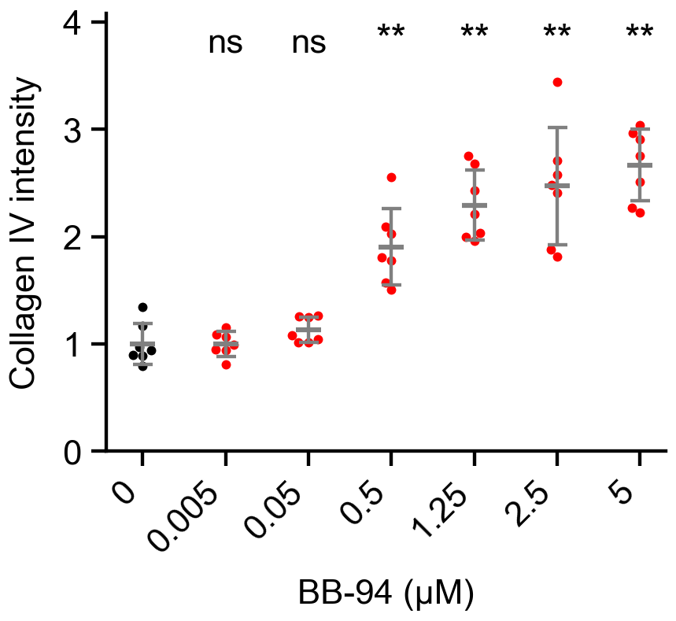

Each point is the mean raw-image collagen IV AUC across retained line scans from one gland, divided by the mean of the control gland means. Vehicle mean is 1. Statistics use these gland means, not individual line scans.
Error bar is SD.
Mann-Whitney U with Holm correction: two-sided comparisons of each nonzero dose with DMSO (0). Holm correction covers these 6 comparisons within this plot (family-wise alpha 0.05). All tested comparisons are displayed; comparisons between treated doses are not included.
Asterisks: * adjusted p < .05; ** < .01; *** < .001; **** < .0001; ns >= .05. Means and SD are descriptive summaries; the test compares ranks.
Different glands are treated as independent biological observations. Treatment groups are not paired. Embryo/litter identifiers are not available for modeling further clustering.
Control normalization uses equal gland weights. The notebook used a pooled control-profile mean; the new denominator changes the scale slightly but cannot change these scale-invariant tests.
Exact when either group has at most 8 glands and there are no pooled ties; otherwise asymptotic with tie and continuity correction.
Mann-Whitney does not require normality. It compares independent groups using ranks; a pure location/median interpretation additionally requires comparable distribution shapes. Unequal variances are not interpreted as evidence specifically about mean differences.
U is reported with dose B as the first sample. 2*U_b/(n_a*n_b)-1: positive means larger values tend to occur in dose B; ties contribute half to U. Mean differences are descriptive only. No parametric confidence intervals are attached to the rank-test results.
716 line scans from 49 glands; 12–15 scans per gland. Control denominator = 262.4852937 AUC units; notebook denominator = 262.750973. The normalized scale changes by 0.1012%.
Input audit and explicit exclusions are recorded in the run JSON. Source notebooks and measurement files are unchanged.
| dose_um | n | mean | sd | variance |
|---|---|---|---|---|
| 0 | 7 | 1 | 0.19115 | 0.036537 |
| 0.005 | 7 | 0.99788 | 0.11469 | 0.013153 |
| 0.05 | 7 | 1.1317 | 0.1183 | 0.013994 |
| 0.5 | 7 | 1.904 | 0.35766 | 0.12792 |
| 1.25 | 7 | 2.2941 | 0.32942 | 0.10852 |
| 2.5 | 7 | 2.4729 | 0.54799 | 0.30029 |
| 5 | 7 | 2.6681 | 0.33564 | 0.11266 |
| dose_b_um | n_a | n_b | U_b | rank_biserial_b_minus_a | p_raw | p_adjusted | p_method | annotation |
|---|---|---|---|---|---|---|---|---|
| 0.005 | 7 | 7 | 28 | 0.142857 | 0.710373 | 0.710373 | exact | ns |
| 0.05 | 7 | 7 | 38 | 0.55102 | 0.0973193 | 0.194639 | exact | ns |
| 0.5 | 7 | 7 | 49 | 1 | 0.000582751 | 0.0034965 | exact | ** |
| 1.25 | 7 | 7 | 49 | 1 | 0.000582751 | 0.0034965 | exact | ** |
| 2.5 | 7 | 7 | 49 | 1 | 0.000582751 | 0.0034965 | exact | ** |
| 5 | 7 | 7 | 49 | 1 | 0.000582751 | 0.0034965 | exact | ** |
| dose_a_um | dose_b_um | n_a | n_b | mean_difference_b_minus_a | U_b | rank_biserial_b_minus_a | p_raw | p_method | ties_present | method | p_adjusted | annotation |
|---|---|---|---|---|---|---|---|---|---|---|---|---|
| 0 | 0.005 | 7 | 7 | -0.00212206 | 28 | 0.142857 | 0.710373 | exact | False | Two-sided Mann-Whitney U + Holm | 0.710373 | ns |
| 0 | 0.05 | 7 | 7 | 0.131698 | 38 | 0.55102 | 0.0973193 | exact | False | Two-sided Mann-Whitney U + Holm | 0.194639 | ns |
| 0 | 0.5 | 7 | 7 | 0.904012 | 49 | 1 | 0.000582751 | exact | False | Two-sided Mann-Whitney U + Holm | 0.0034965 | ** |
| 0 | 1.25 | 7 | 7 | 1.29409 | 49 | 1 | 0.000582751 | exact | False | Two-sided Mann-Whitney U + Holm | 0.0034965 | ** |
| 0 | 2.5 | 7 | 7 | 1.47287 | 49 | 1 | 0.000582751 | exact | False | Two-sided Mann-Whitney U + Holm | 0.0034965 | ** |
| 0 | 5 | 7 | 7 | 1.66812 | 49 | 1 | 0.000582751 | exact | False | Two-sided Mann-Whitney U + Holm | 0.0034965 | ** |
Method references: SciPy Mann-Whitney U; Holm correction.